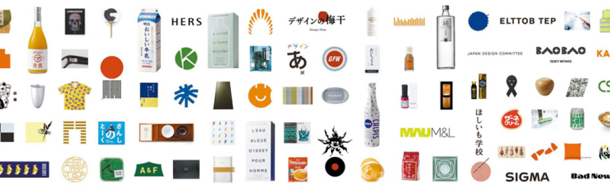

디자인에는 환경을 이해하는 기술이 필요합니다. 그러므로 주의 깊게 보고 들어야 합니다. 디자인에는 우리의 인식 속에 숨어 있는 아주 작은 빛의 빛도 놓치지 않는 기술이 필요합니다. 그렇기 때문에 우리는 조용히 집중해야 합니다. 디자인에는 이미 세상에 존재하는 보이지 않는 기호를 찾아내는 기술이 필요합니다. 그러므로 가능한 한 자아를 버릴 필요가 있다. 디자인에는 커뮤니케이션을 확립하는 기술이 필요합니다. 그러므로 우리는 다른 사람에게 예의를 갖추어야 합니다. 디자인에는 신체가 집중할 수 있도록 준비하는 기술이 필요합니다. 그러므로 뇌와 신체의 균형을 유지하는 것이 필요합니다. 사람은 누구나 자신만의 감성을 가지고 있습니다. 디자인은 감성이 아니라 기술에 관한 것입니다.
